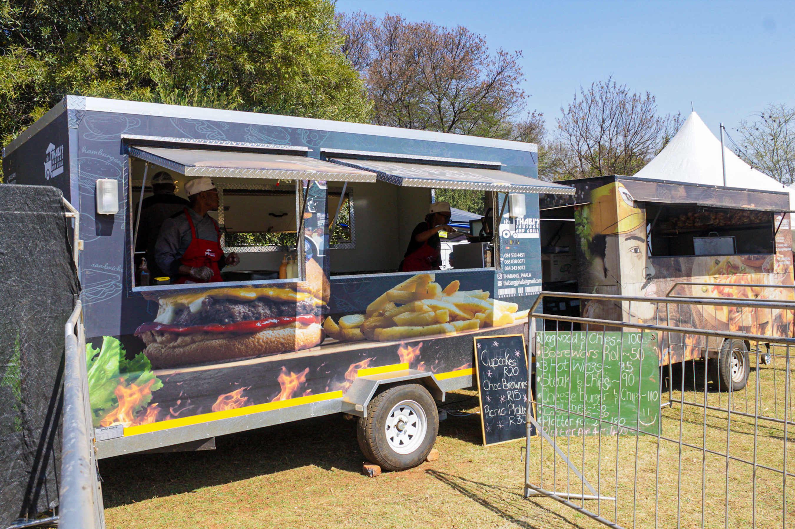

Welcome to Thabi’s Sausage and Grill! We are committed to providing the best sausage and grill experience in Pretoria.
The business wishes to increase significance in the lives of their patrons and to find resolutions between recognized industries and traders.
Our goal is to ensure that we are well known in and around Pretoria for our services and to be the preferred brand for many. Keeping the environment clean is just as vital.